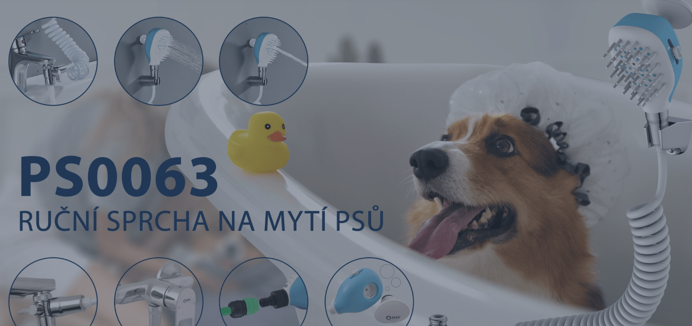

01
Návštěvník odchází bez kontaktu
Pokud zákazník přijde z reklamy nebo vyhledávání a nezanechá e-mail, e-shop ho ztrácí. Při další komunikaci je znovu závislý na placené návštěvnosti.
Slezák-RAV není jen e-shop. Je to tradiční český výrobce vodovodních baterií a koupelnových doplňků, kde hraje velkou roli design, kvalita, precizní zpracování a důvěra ve výrobce. Právě proto dává e-mail marketing smysl — zákazník často nevybírá jen podle ceny, ale podle jistoty, stylu, povrchové úpravy, záruky a technického řešení.

Pokud ho nenahrajete, stránka funguje i bez něj.'}))"/>U sortimentu jako vodovodní baterie, sprchový program, koupelnové doplňky, sifony, výpustě, ventily a náhradní díly zákazník často porovnává, vrací se, řeší technické parametry, vzhled, kompatibilitu a důvěru. Právě proto dává smysl mít systém, který s ním pracuje i po odchodu z webu.
Pokud zákazník přijde z reklamy nebo vyhledávání a nezanechá e-mail, e-shop ho ztrácí. Při další komunikaci je znovu závislý na placené návštěvnosti.
Opuštěný košík často není odmítnutí. Zákazník jen porovnává, přemýšlí, řeší montáž, dostupnost, cenu, design nebo se k nákupu potřebuje vrátit později.
Po objednávce je prostor poděkovat, ověřit spokojenost, získat recenzi, nabídnout podporu a udržet zákazníka pro další nákup nebo budoucí projekt.
E-mail marketing je jedna z nejefektivnějších forem další komunikace, protože neplatíte znovu za každý zásah jako u reklamy. Jakmile zákazník dobrovolně zanechá kontakt, můžete s ním pracovat dlouhodobě, segmentovaně a podle jeho reálného zájmu.
Databáze kontaktů, které přišly z webu, nákupu, formuláře, košíku nebo newsletteru. Nejsou to anonymní návštěvy. Jsou to lidé, u kterých víme, že se zajímali o vodovodní baterie, sprchový program, koupelnové doplňky, sifony, výpustě, ventily nebo náhradní díly.
Reklama je důležitá pro přivádění nových lidí. E-mailing ale pomáhá vytěžit návštěvnost, za kterou už jste zaplatili. Neznamená to vypnout reklamu. Znamená to, že z ní získáte víc.
E-mail marketing nemá stát jen na hezkém designu. Má mít jasnou logiku, doručitelnost, dobré texty a měřitelný dopad. Níže jsou ukázky výsledků z projektů, na kterých pracuji.
| Kampaň | Doručeno | Open | CTR |
|---|---|---|---|
| Body | SK | 1 812 | 29,97 % | 4,36 % |
| Zlúčenie kartičiek | 320 | 26,56 % | 0,00 % |
| Body | Apríl/Máj | FU | 6 448 | 11,00 % | 1,60 % |
| Body | Apríl/Máj | 7 696 | 48,65 % | 4,33 % |
| Mango Kir | SK | 1 821 | 36,52 % | 2,64 % |
Nejde jen o posílání textu. Profesionální e-mail musí dobře vypadat, být přehledný, působit důvěryhodně a zároveň vést zákazníka k dalšímu kroku. Náhledy níže si může klient otevřít celé v novém okně.

Ukázka e-mailu pro věrnostní komunikaci a práci se zákaznickou databází.
Otevřít celou šablonu →
Produktová a promo komunikace s jasnou nabídkou, strukturou a CTA prvky.
Otevřít celou šablonu →
Prémiovější produktový newsletter s důrazem na značku, edukaci a důvěru.
Otevřít celou šablonu →Základem nejsou náhodné newslettery. Základem jsou automatizace, které se spouští podle chování zákazníka: nový kontakt, opuštěný košík, nákup, neaktivita nebo zájem o konkrétní kategorii.
Pop-up, formulář nebo uvítací mechanismus s jasným důvodem, proč má zákazník zanechat e-mail.
Zákazník se může zařadit podle toho, jestli řeší vodovodní baterii, sprchový program, koupelnový doplněk, sifon, výpust, ventil nebo náhradní díl.
Podle chování dostává relevantní e-maily: uvítání, košík, po nákupu, reaktivace nebo tematický newsletter.
E-mail marketing má kopírovat reálné nákupní chování. Zákazník nejdřív hledá řešení, potom porovnává, často se ptá nebo váhá a teprve potom objednává.
Zákazník přijde z reklamy, vyhledávání, doporučení nebo přímé návštěvy.
Prohlíží vodovodní baterie, sprchový program, koupelnové doplňky, sifony, výpustě, ventily nebo náhradní díly.
Produkt vloží do košíku, ale může ještě řešit parametry, cenu, dostupnost nebo montáž.
Objedná produkt a vzniká prostor pro podporu, spokojenost a další vztah.
Po čase se dá zákazník vrátit přes reaktivaci, sezónní téma nebo nové řešení.
Pokud e-shop zatím e-mail marketing neřeší, není potřeba začít složitě. Nejprve má smysl postavit základ, který zachytí kontakt, vrátí košík a udrží vztah po objednávce.
Zachytí nový kontakt, představí značku, ukáže hlavní sortiment a ideálně zjistí, co zákazník řeší: vodovodní baterie, sprchový program, koupelnové doplňky, sifony, výpustě, ventily nebo náhradní díly.
Připomene rozpracovaný nákup, odbourá nejistotu a vrátí zákazníka zpět k produktu, který už si vybral.
Poděkování, kontrola spokojenosti, podpora a žádost o recenzi. Jednoduchá série, která nevyžaduje rozsáhlé návody ani videa.
Vrací lidi, kteří delší dobu nereagovali nebo nenakoupili. Cílem není tlačit slevu, ale dát relevantní důvod vrátit se zpět.
Pravidelný newsletter má smysl až ve chvíli, kdy máme postavené automatizace. Potom může pracovat s novinkami, kolekcemi, konkrétním sortimentem, sezónními tématy, inspirací pro koupelnu a kuchyň nebo servisními informacemi.
Nové produktové řady, designové varianty, povrchové úpravy, sprchový program, koupelnové doplňky nebo náhradní díly.
Jak vybrat vodovodní baterii, sprchový program, sifon, výpust, ventil nebo koupelnový doplněk bez toho, aby zákazník musel vše řešit sám.
Náhradní díly, záruky, podpora, údržba, komponenty a témata, která posilují jistotu při nákupu.
Doména, doručitelnost, formuláře, napojení e-shopu, základní segmenty a měření.
Uvítací série, opuštěný košík, ponákupové navázání a jednoduchá reaktivace.
Až potom pravidelná komunikace podle sortimentu, sezóny a toho, co zákazníci skutečně řeší.
Cílem není posílat e-maily jen proto, aby se něco posílalo. Cílem je vytvořit vlastní publikum a automatizace, které z návštěvníků, košíků a zákazníků vytěží víc než samotná reklama.
Almao · e-mail marketing
Pomáhám menším a středním e-shopům v SK/CZ trhu nastavit e-mail marketing tak, aby nebyl jen o newsletterech, ale o systému na opakované nákupy a vlastní publikum.